A instalação é feita uma vez por computador e leva 2 minutos. Funciona no Google Chrome, versão 116 ou mais nova.
github.com/diazrma/panda-qa-recorder/releases) e descompacte numa pasta fixa, por exemplo Documentos/panda-qa-recorder. Não apague nem mova essa pasta depois: o Chrome usa a extensão direto dela.chrome://extensions na barra de endereço e tecle Enter.manifest.json).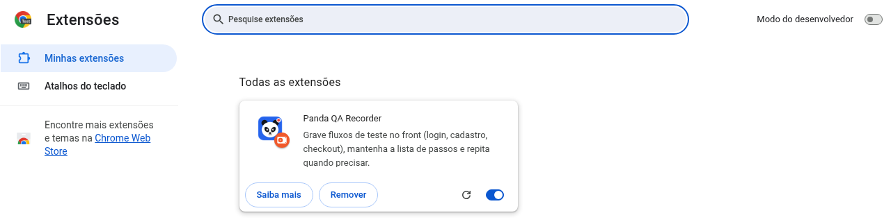
Clique no ícone do panda na barra do Chrome. O painel abre na lateral direita e fica aberto enquanto você navega pela loja. Tudo é feito por ele: gravar, executar, ver resultados e configurar.
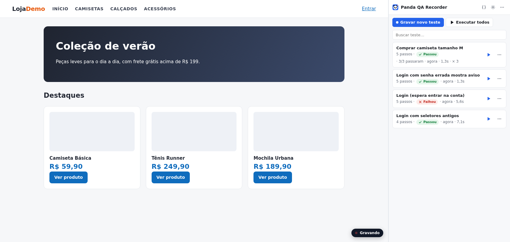
{{senha}} e o valor fica só nas suas Variáveis. Assim o teste pode ser compartilhado sem expor a senha.Um teste só confirma algo quando tem verificações. Sem elas, ele apenas repete os cliques. Use verificações para conferir o resultado esperado: a mensagem de sucesso, o título da página, o valor do total.
Pelo botão + Passo também dá para adicionar à mão:
/checkout/onepage/success).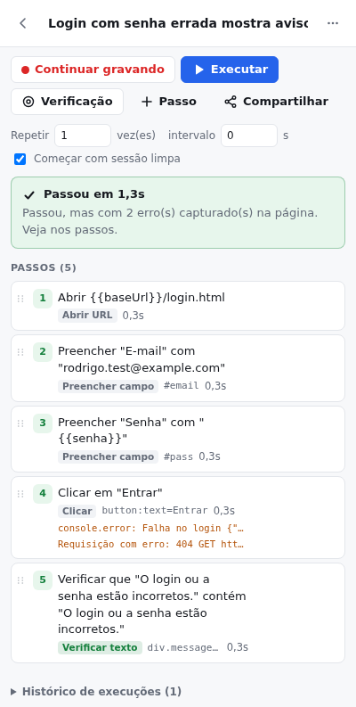
Abaixo dos botões do teste há Repetir __ vez(es) e intervalo __ s. Exemplo: 10 vezes com intervalo de 30 s. Cada repetição usa valores novos para as variáveis geradas (outro e-mail, outro CPF), então dá para criar vários cadastros seguidos.
No fim aparece o placar, por exemplo "8 de 10 execuções passaram". Se uma repetição falhou, a última falha fica guardada com print e erros, mesmo que as seguintes tenham passado.
O Histórico de execuções, no fim da página do teste, guarda as últimas 50 execuções com data, resultado, duração e número da repetição.
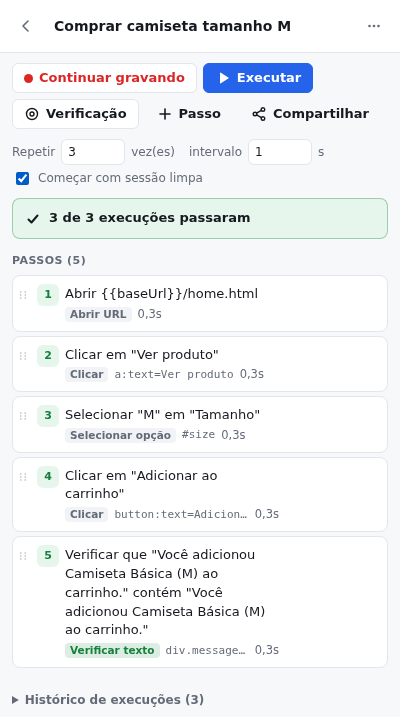
A extensão junta tudo o que ajuda a entender o motivo:
| O que | Exemplo |
|---|---|
| Erro do passo | "Elemento não encontrado: botão Finalizar", "URL atual não contém /success" |
| Mensagens na página | Avisos de erro da loja e erros de validação de cada campo: "O login ou a senha estão incorretos.", "Senha: Este é um campo obrigatório." |
| Erros capturados por passo | Erros de JavaScript, console.error, requisições que voltaram com erro (404, 500) e falhas de rede. Aparecem embaixo do passo em que aconteceram, mesmo quando o teste passa. |
| Print da tela | Foto da página no momento da falha. Clique no print para ampliar. |
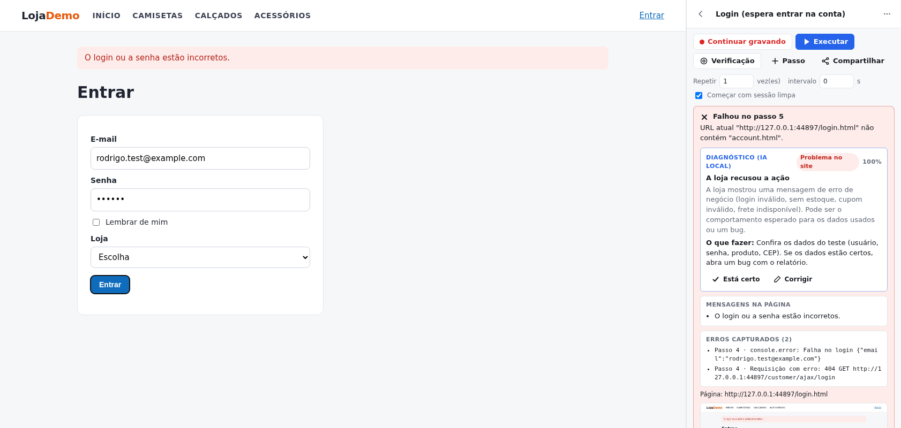
⤓ Baixar relatório gera um arquivo HTML com os passos, os erros, as mensagens e o print, para anexar na tarefa. ⧉ Copiar resumo copia o mesmo conteúdo em texto, para colar direto num comentário.
Passe o mouse sobre um passo para ver as ações: ▶ executar a partir dele, lápis editar, olho desativar (o passo é pulado sem ser apagado) e lixeira excluir. Para mudar a ordem, arraste o passo pela alça ⋮⋮ à esquerda.
No editor de um passo:
| Campo | Para que serve |
|---|---|
| Texto a digitar / Valor | O que é preenchido. Aceita variáveis: clique nos atalhos {{...}} logo abaixo do campo. |
| Seletores | Como a extensão encontra o elemento, testados em ordem. A gravação já preenche; só mexa se o teste não achar o elemento depois de uma mudança no site. Aceita CSS (#email) ou texto (button:text=Entrar). |
| Testar na página | Destaca na aba atual o elemento que o passo encontraria. Confira antes de salvar. |
| Tempo limite | Quanto esperar o elemento só nesse passo (o padrão é 15 s). Aumente em telas lentas, como o cálculo de frete. |
| Opcional | Se o passo falhar, o teste continua. Use para pop-ups que às vezes aparecem, como o de cookies ou de newsletter. |
No topo da lista, clique em { }. Variáveis são escritas como {{nome}} nos passos e trocadas pelo valor na hora de executar.
| Variável | Uso |
|---|---|
baseUrl | Endereço da loja. A gravação já usa {{baseUrl}}. Troque o valor para rodar o mesmo teste em outro ambiente (local, staging, produção). |
senha | Preenchida sozinha com a senha digitada na gravação. Marcada como secreta (cadeado). |
{{$email}} | E-mail novo a cada execução. Use no cadastro, senão a 2ª execução falha com "e-mail já cadastrado". Vale o mesmo até o fim da execução, então serve também para o login logo depois. |
{{$timestamp}} | Número único por execução. Ex.: rodrigo.test+{{$timestamp}}@example.com. |
{{$cpf}}, {{$random}}, {{$date}} | CPF válido aleatório, número aleatório e data de hoje. |
emailDomain | (opcional) Domínio do {{$email}}. O padrão é example.com, que nunca recebe e-mail de verdade. |
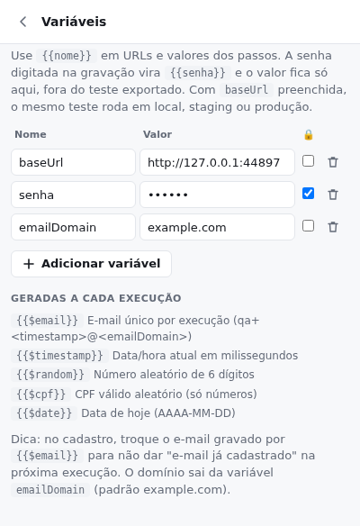
No teste, clique em Compartilhar:
PANDAQA1.…) para colar no chat ou na tarefa. Quem recebe abre o menu ⋯ da lista, escolhe Colar teste compartilhado e cola a mensagem inteira. O teste aparece na lista dele.baseUrl e senha. Elas nunca vão junto.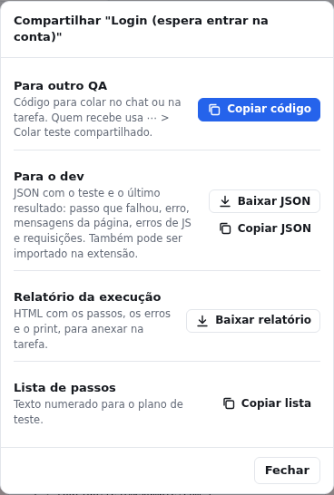
Os testes ficam salvos no Chrome. Como garantia, a extensão também salva sozinha um backup em Downloads/panda-qa-recorder/backup-AAAA-MM-DD.json, um arquivo por dia, sempre que algum teste muda (padrão: no máximo a cada 6 h).
Esse arquivo fica fora do Chrome, então sobrevive a limpar dados de navegação, reinstalar a extensão ou trocar de computador. Ele leva todos os testes, o histórico e os resultados. As senhas não vão.
Em Configurações (engrenagem): mude a frequência (1 h, 6 h, 24 h ou desligado), use Fazer backup agora e Restaurar backup.
Para recuperar: clique em Restaurar backup e escolha o arquivo. Nada é apagado: testes que não existem são adicionados, e os que existem só são atualizados se o backup for mais novo. Depois, preencha de novo a variável senha.
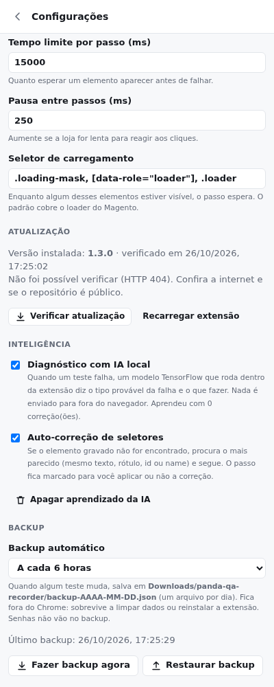
rodrigo.test+{{$timestamp}}@example.com para ter um e-mail novo a cada execução. Com captcha ligado em todos os logins, peça para desativar no ambiente de teste.rodrigo.test@example.com). Nunca use dados de clientes reais.| O que acontece | O que fazer |
|---|---|
| Clico em Gravar e aparece "Abra a página da loja" | A aba atual não é um site (ex.: nova aba ou chrome://). Abra a loja na aba e tente de novo. |
| "Elemento não encontrado" num passo que antes funcionava | O site mudou. Edite o passo, clique em Testar na página e ajuste os seletores, ou apague o passo e regrave aquele trecho com Continuar gravando. |
| "Variável {{senha}} não definida" | Cadastre o valor em Variáveis ({ }). Acontece em testes importados ou compartilhados. |
| Falha logo no começo, no link "Entrar" ou no carrinho | O navegador provavelmente estava logado ou com carrinho de uma execução anterior. Deixe marcado Começar com sessão limpa no teste. |
| Cadastro falha na 2ª execução | Troque o e-mail do passo por {{$email}}. |
| O teste passa no meu computador e falha no de outra pessoa | Confira a variável baseUrl de cada um e se os dois estão logados ou deslogados do mesmo jeito. |
| Sumiram todos os testes | Use Configurações > Restaurar backup com o arquivo mais recente de Downloads/panda-qa-recorder. |
| Extensão sumiu ou dá erro depois de mover a pasta | Instale de novo a partir da pasta nova (passo 1) e restaure o backup. |
Quando um teste falha, aparece o quadro Diagnóstico (IA local) com o tipo provável da falha, a confiança, a explicação e o que fazer. A etiqueta diz de onde vem o problema: Ajustar o teste, Problema no site ou Ambiente.
O modelo é de TensorFlow e roda dentro da extensão. Nada é enviado para serviços de IA de terceiros. Ele reconhece: elemento mudou ou sumiu, sessão de execução anterior, captcha, lentidão, erro no servidor, campo obrigatório ou inválido, recusa da loja (login inválido, sem estoque, cupom), dado já cadastrado, erro de JavaScript, redirecionamento inesperado, texto diferente e configuração do teste.
Ele aprende com você: se o diagnóstico estiver certo, clique em Está certo; se não, em Corrigir, e escolha o motivo real. O modelo é retreinado no seu computador com essa correção.
O diagnóstico também vai no relatório, no resumo e no JSON para o dev.
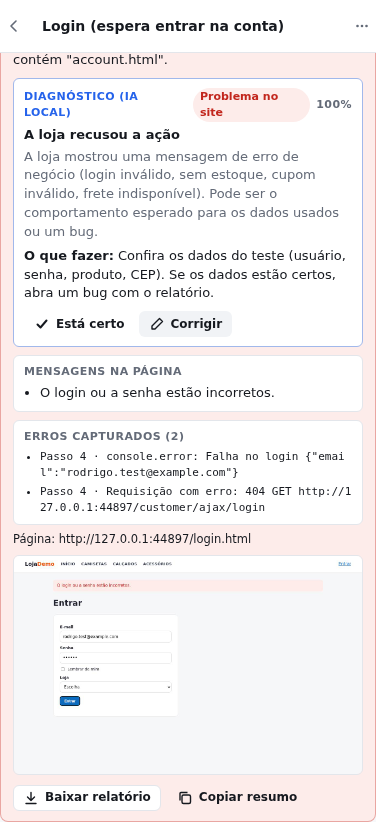
Se o site mudou e o elemento gravado não é encontrado (por exemplo, o botão ganhou outro id), a extensão procura o elemento mais parecido com o gravado: mesmo texto, rótulo, id, name, placeholder ou link. Ela só segue se um candidato for claramente o melhor.
O passo fica amarelo, com o elemento que foi usado. Confira e clique em Aplicar correção para atualizar o teste; os seletores antigos ficam como reserva.
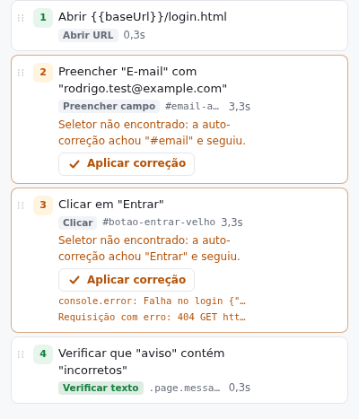
A extensão verifica sozinha, duas vezes por dia, se há versão nova. Quando há, aparece Nova versão X no topo do painel. Também dá para verificar na hora em Configurações > Atualização > Verificar atualização.
Os testes, o histórico e o que a IA aprendeu continuam salvos.
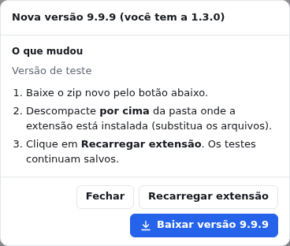